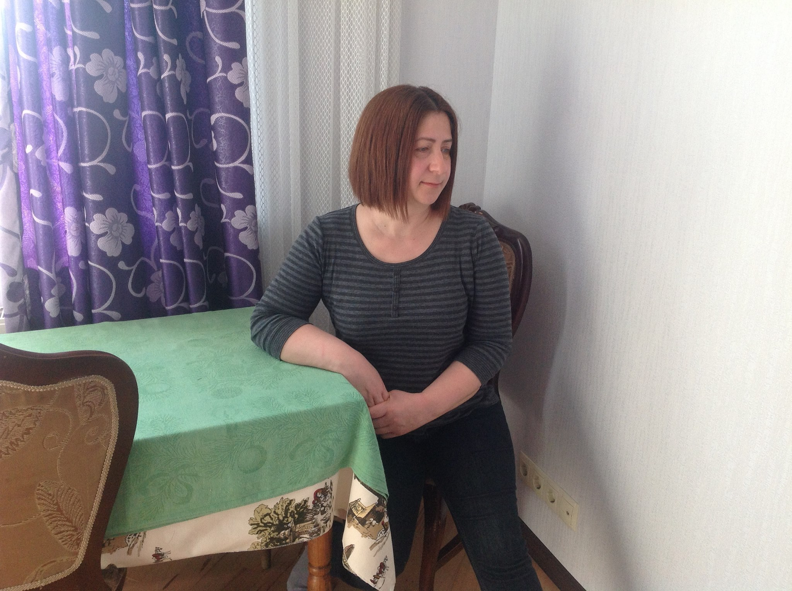

ჭანტურია ნონა
მცხობელი, კულინარი
- მისამართი: ვარკეთილი მესამე მასივი, დ ქუჩა, კორუპუსი 7
- ტელეფონი: 591170768
- მეილი: nonacho@bk.ru
- პროფილი:
-
დავიბადე 1973 წლის 18 მარტს. ბავშვობიდან მიზიდავდა კულინარია და მაქვს დიდი გამოცდილება, როგორც საქართველოში ასევე საზღვარგარეთ მუშაობის. ვარ პასუხისმგებლიანი, შრომისმოყვარე ადამიანი. კულინარია არის ჩემი ჰობი. რუსეთში ცხოვრების პერიოდში ვმუშაობდი 5 წლის განმავლობაში , თუმცა საქართველოში ჩამოსვლის შემდეგ მხოლოდ დიასახლისობით დაკავებული, ამ პერიოდის განმავლობაში სახლშიც შევიძინე დიდი გამოცდილება. ამის შემდეგ 4 წლის განმავლობაში ვმუშაობდი თბილისში , ახლა კი მზად ვარ შემოვუერთდე თქვენ ჯგუფს! რაც შეეხება მოტივაციას, ჩემი მთავარი მიზანია , მოვხვდე თქვენს კოლექტიურ ჯგუფში, ვინაიდან მსმენია თქვენი მეგობრული გარემოს შესახებ , მსურს გავიღრმავო ცოდნა და ჩემი გამოცდილებით შევმატო თუნდაც მცირედი თქვენს კოლექტივს და გავხდე მადარტის დიდი ოჯახის განუყოფელი ნაწილი.
- სქილები:
-
- კულინარიული ცოდნა
- 10 წლის მანძილზე მუშაობის გამოცდილება
- მაღალი პასუხისმგებლობა
- კოლექტიურად, ჯგუფში მუშაობის გამოცდილება
- გამოცდილება
-
მცხობელი
რუსეთში კაფე: "xoroshoe"
2002 - 2006
რუსეთში ვმუშაობდი 4 წლის განმავლობაში ვმუშაობდი ორ ადგილას მცხობელად, კერძოდ შეხება მქონდა ხაჭაპურებისა და საცხობის ცხობასთან
მცხობელი , ინდმეწარმე
ლისის გზაზე
თებერვალი 2016 - 2019
2016 წლიდან მოყოლებული ვმუშაობდი და ვხელმძღვანელოდი ლისის გზაზე არსებულ კულინარიულ დაწესებულებას. კერძოდ საოჯახო სამზარეულოში დაკავებული ვიყავი სხავდასხვა სახის საკვების მომზადებით. მიწევდა, როგორც ცომეულობასთან , ასევე საჭიროებსამებრ საოჯახო სამზარეულოში არსებულ თითქმის ყველა საკვებთან, სალათებთან , ნამცხვრებთან ურთიერთობა.